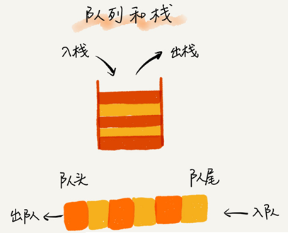

队列的结构
可以把队列想象成排队买票，先来的先买，后来的人只能站末尾，不允许插队。
队列最大的特点就是先进先出，主要的两个操作是入队和出队。跟栈一样，它既可以用数组来实现，也可以用链表来实现。用数组实现的叫顺序队列，用链表实现的叫链式队列。特别是长得像一个环的循环队列。在数组实现队列的时候，会有数据搬移操作，要想解决数据搬移的问题，就需要循环数组实现的循环队列。
先进者先出，是典型的“队列”。
后进者先出，先进者后出，是典型的“栈”结构。
栈只支持入栈 push()和出栈 pop()两个操作。
队列只支持：入队 enqueue()，放一个数据到队列尾部；出队 dequeue()，从队列头部取一个元素。

队列跟栈一样也是一种操作受限的线性表数据结构。
循环队列、阻塞队列、并发队列等具有某些额外特性的队列，它们在很多偏底层系统、框架、中间件的开发中，起着关键性的作用。
比如高性能队列 Disruptor、Linux 环形缓存，都用到了循环并发队列；
Java concurrent 并发包利用 ArrayBlockingQueue 来实现公平锁等。
队列的实现
用数组实现的队列叫作顺序队列，用链表实现的队列叫作链式队列。
数组实现的顺序队列
java基于数组的实现：
// 用数组实现的队列
public class ArrayQueue {
// 数组：items，数组大小：n
private String[] items;
private int n = 0;
// head 表示队头下标，tail 表示队尾下标
private int head = 0;
private int tail = 0;
// 申请一个大小为 capacity 的数组
public ArrayQueue(int capacity) {
items = new String[capacity];
n = capacity;
}
// 入队
public boolean enqueue(String item) {
// 如果 tail == n 表示队列已经满了
if (tail == n) return false;
items[tail] = item;
++tail;
return true;
}
// 出队
public String dequeue() {
// 如果 head == tail 表示队列为空
if (head == tail) return null;
// 为了让其他语言的同学看的更加明确，把 -- 操作放到单独一行来写了
String ret = items[head];
++head;
return ret;
}
}把上面代码翻译成python：
from typing import Optional
class ArrayQueue:
"""用数组实现的队列"""
def __init__(self, capacity: int):
self.items: list = [None] * capacity
self._capacity = capacity
self.head = 0 # 队头下标
self.tail = 0 # 队尾下标
def enqueue(self, item: str) -> bool:
"""入队"""
if self.tail == self._capacity:
return False
self.items[self.tail] = item
self.tail += 1
return True
def dequeue(self) -> Optional[str]:
"""出队"""
if self.head == self.tail:
return None
item = self.items[self.head]
self.head += 1
return item
def __str__(self) -> str:
return str(self.items[self.head:self.tail])队列需要两个指针：一个是 head 指针，指向队头；一个是 tail 指针，指向队尾。
当 a、b、c、d 依次入队之后，队列中的 head 指针指向下标为 0 的位置，tail 指针指向下标为 4 的位置。
调用两次出队操作之后，队列中 head 指针指向下标为 2 的位置，tail 指针仍然指向下标为 4 的位置。
随着不停地进行入队、出队操作，head 和 tail 都会持续往后移动。
当 tail 移动到最右边，即使数组中还有空闲空间，也无法继续往队列中添加数据了。这时只需要触发一次数据的搬移操作即可：
// 入队操作，将 item 放入队尾
public boolean enqueue(String item) {
// tail == n 表示队列末尾没有空间了
if (tail == n) {
// tail ==n && head==0，表示整个队列都占满了
if (head == 0) return false;
// 数据搬移
for (int i = head; i < tail; ++i) {
items[i-head] = items[i];
}
// 搬移完之后重新更新 head 和 tail
tail -= head;
head = 0;
}
items[tail] = item;
++tail;
return true;
}相应python代码：
def enqueue(self, item: str) -> bool:
"""入队"""
# 表示队列末尾没有空间了
if self.tail == self.capacity:
if self.head == 0: return False
# 数据搬移
for i in range(self.head, self.tail):
self.items[i - self.head] = self.items[i]
# 搬移完之后重新更新 head 和 tail
self.tail -= self.head
self.head = 0
self.items[self.tail] = item
self.tail += 1
return True上面的代码中，当队列的 tail 指针移动到数组的最右边后，如果有新的数据入队，就将 head 到 tail 之间的数据，整体搬移到数组中 0 到 tail-head 的位置。
这种实现思路中，出队入队操作的时间复杂度是 O(1)
链表实现的链式队列
基于链表的实现，需要head 和 tail 两个指针。分别指向链表的第一个和最后一个结点。
入队时，tail->next= new_node, tail = tail->next；出队时，head = head->next。
java实现代码：
public class QueueBasedOnLinkedList {
// 队列的队首和队尾
private Node head = null;
private Node tail = null;
// 入队
public void enqueue(String value) {
if (tail == null) {
Node newNode = new Node(value, null);
head = newNode;
tail = newNode;
} else {
tail.next = new Node(value, null);
tail = tail.next;
}
}
// 出队
public String dequeue() {
if (head == null) return null;
String value = head.data;
head = head.next;
if (head == null) {
tail = null;
}
return value;
}
public void printAll() {
Node p = head;
while (p != null) {
System.out.print(p.data + " ");
p = p.next;
}
System.out.println();
}
private static class Node {
private String data;
private Node next;
public Node(String data, Node next) {
this.data = data;
this.next = next;
}
public String getData() {
return data;
}
}
}python代码实现：
from typing import Optional
class ListNode:
def __init__(self, data: str, next=None):
self.data = data
self._next = next
class LinkedQueue:
def __init__(self):
self._head: Optional[ListNode] = None
self._tail: Optional[ListNode] = None
def enqueue(self, value: str):
# 入队
new_node = ListNode(value)
if self._tail:
self._tail._next = new_node
else:
self._head = new_node
self._tail = new_node
def dequeue(self) -> Optional[str]:
"""出队"""
if self._head:
value = self._head.data
self._head = self._head._next
if not self._head:
self._tail = None
return value
def __str__(self) -> str:
values = []
p: ListNode = self._head
while p:
values.append(p.data)
p = p._next
return "->".join(values)循环数组实现的队列
上面用数组来实现队列的时候，在 tail==n 时，会有数据搬移操作，采用循环数组则不需要数据搬移操作。
原本数组是有头有尾的是一条直线，把它首尾相连扳成一个环：

图中这个队列的大小为 8，当前 head=4，tail=7。
当有一个新的元素 a 入队时，放入下标为 7 的位置， tail 并不更新为 8，而是到下标为 0 的位置。
当再有一个元素 b 入队时，将 b 放入下标为 0 的位置，然后 tail 加 1 更新为 1。
在 a，b 依次入队之后，循环队列中的元素就变成了下面的样子：
确定队空和队满的判定条件。
队列为空的判断条件是 head == tail。
如上图，显然队列满的判断条件是(tail+1)%n=head，
为了避免和队空的判断条件混淆，则必须牺牲一个数组的存储空间。
java实现代码：
public class CircularQueue {
// 数组：items，数组大小：n
private String[] items;
private int n = 0;
// head 表示队头下标，tail 表示队尾下标
private int head = 0;
private int tail = 0;
// 申请一个大小为 capacity 的数组
public CircularQueue(int capacity) {
items = new String[capacity];
n = capacity;
}
// 入队
public boolean enqueue(String item) {
// 队列满了
if ((tail + 1) % n == head) return false;
items[tail] = item;
tail = (tail + 1) % n;
return true;
}
// 出队
public String dequeue() {
// 如果 head == tail 表示队列为空
if (head == tail) return null;
String ret = items[head];
head = (head + 1) % n;
return ret;
}
}python实现代码：
from typing import Optional
class CircularQueue:
def __init__(self, capacity):
self.capacity = capacity + 1
self.items = [None] * self.capacity
self.head = 0 # head表示队头下标
self.tail = 0 # tail表示队尾下标
def enqueue(self, item: str) -> bool:
"""入队"""
if (self.tail + 1) % self.capacity == self.head:
return False
self.items[self.tail] = item
self.tail = (self.tail + 1) % self.capacity
return True
def dequeue(self) -> Optional[str]:
# 如果head == tail 表示队列为空
if self.head == self.tail: return None
item = self.items[self.head]
self.head = (self.head + 1) % self.capacity
return item
def __str__(self) -> str:
if self.tail >= self.head:
return str(self.items[self.head: self.tail])
else:
return str(self.items[self.head:] + self.items[:self.tail])队列在实际开发中的应用
阻塞队列
阻塞队列其实就是在队列基础上增加了阻塞操作。简单来说，就是在队列为空的时候，从队头取数据会被阻塞。因为此时还没有数据可取，直到队列中有了数据才能返回；如果队列已经满了，那么插入数据的操作就会被阻塞，直到队列中有空闲位置后再插入数据，然后再返回。

使用阻塞队列，就可以轻松实现一个“生产者 - 消费者模型”！
这种基于阻塞队列实现的“生产者 - 消费者模型”，可以有效地协调生产和消费的速度。当“生产者”生产数据的速度过快，“消费者”来不及消费时，存储数据的队列很快就会满了。这个时候，生产者就阻塞等待，直到“消费者”消费了数据，“生产者”才会被唤醒继续“生产”。
还可以通过协调“生产者”和“消费者”的个数，来提高数据的处理效率。
可以多配置几个“消费者”，来应对一个“生产者”：

python基于阻塞队列实现的生产者 - 消费者模型：
import queue
import random
import threading
import time
class Producer(threading.Thread):
nameList = ["apple", "peach", "pineapple", "orange", "banana", "blueberry"]
flag = 1
def __init__(self, q, name):
threading.Thread.__init__(self)
self.name = name
self.q = q
def run(self):
name_list = Producer.nameList
while Producer.flag:
queueLock.acquire()
if not self.q.full():
data = name_list[random.randrange(0, len(name_list))]
self.q.put(data)
print("%s 生产数据: %s" % (threading.currentThread().name, data))
queueLock.release()
else:
queueLock.release()
time.sleep(random.random() * 3)
class Consumer(threading.Thread):
flag = 1
def __init__(self, q, name):
threading.Thread.__init__(self)
self.name = name
self.q = q
def run(self):
while Consumer.flag:
queueLock.acquire()
if not self.q.empty():
data = self.q.get()
print("%s 消费数据: %s" % (threading.currentThread().name, data))
queueLock.release()
else:
queueLock.release()
time.sleep(random.random() * 4)
workQueue = queue.Queue(5)
queueLock = threading.Lock()
# 创建新线程
Producer(workQueue, "Producer1").start()
Producer(workQueue, "Producer2").start()
Consumer(workQueue, "Consumer1").start()
Consumer(workQueue, "Consumer2").start()
Consumer(workQueue, "Consumer3").start()
while 1:
time.sleep(1)
print(workQueue.queue)并发队列
在多线程情况下，会有多个线程同时操作队列，这个时候就会存在线程安全问题。
线程安全的队列叫作并发队列。最简单直接的实现方式是直接在 enqueue()、dequeue() 方法上加锁，但是锁粒度大并发度会比较低，同一时刻仅允许一个存或者取操作。实际上，基于数组的循环队列，利用 CAS 原子操作，可以实现非常高效的并发队列。这也是循环队列比链式队列应用更加广泛的原因。
有限资源池
常见的有限资源池有线程池和数据库连接池。
CPU 资源是有限的，任务的处理速度与线程个数并不是线性正相关。相反，过多的线程反而会导致 CPU 频繁切换，处理性能下降。所以，线程池的大小一般都是综合考虑要处理任务的特点和硬件环境，来事先设置的。
当我们向固定大小的线程池中请求一个线程时，如果线程池中没有空闲资源了，这个时候线程池如何处理这个请求？是拒绝请求还是排队请求？各种处理策略又是怎么实现的呢？
线程池一般有两种处理策略：
- 非阻塞的处理方式，直接拒绝任务请求；
- 阻塞的处理方式，将请求排队，等到有空闲线程时，取出排队的请求继续处理。
我们希望公平地处理每个排队的请求，先进者先服务，队列这种数据结构很适合来存储排队请求。
基于链表实现的队列，可以实现一个支持无限排队的无界队列（unbounded queue），但是可能会导致过多的请求排队等待，请求处理的响应时间过长。所以，针对响应时间比较敏感的系统，基于链表实现的无限排队的线程池是不合适的。
基于数组实现的有界队列（bounded queue），队列的大小有限，所以线程池中排队的请求超过队列大小时，接下来的请求就会被拒绝，这种方式对响应时间敏感的系统来说，就相对更加合理。
队列设置太大会导致等待的请求太多，设置太小会导致无法充分利用系统资源、发挥最大性能。
对于大部分资源有限的场景，当没有空闲资源时，基本上都可以通过“队列”这种数据结构来实现请求排队。
思考题
1、你还知道有哪些场景中会用到队列的排队请求呢？
答：
各种消息队列，例如Active MQ ,Rabbit MQ ,Rocket MQ ,Zero MQ 以及分布式消息队列Kafka等。
2、如何实现无锁并发队列？
答：
使用 CAS 原子操作 + 循环数组的方式可以实现。
对于java语言，jdk提供了java.util.concurrent.atomic 包实现 CAS 原子操作
对于python语言可以使用协程，这样就不会存在并发访问问题。